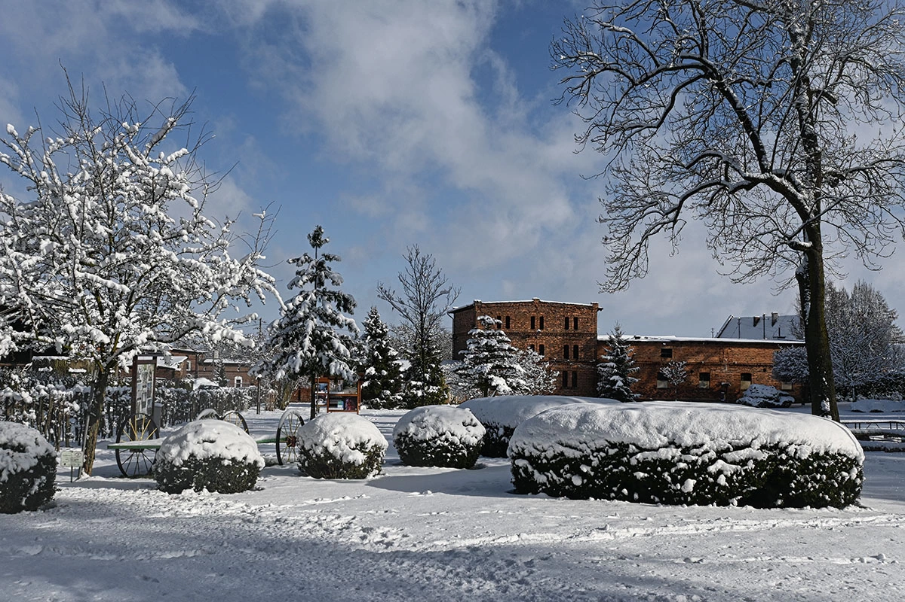
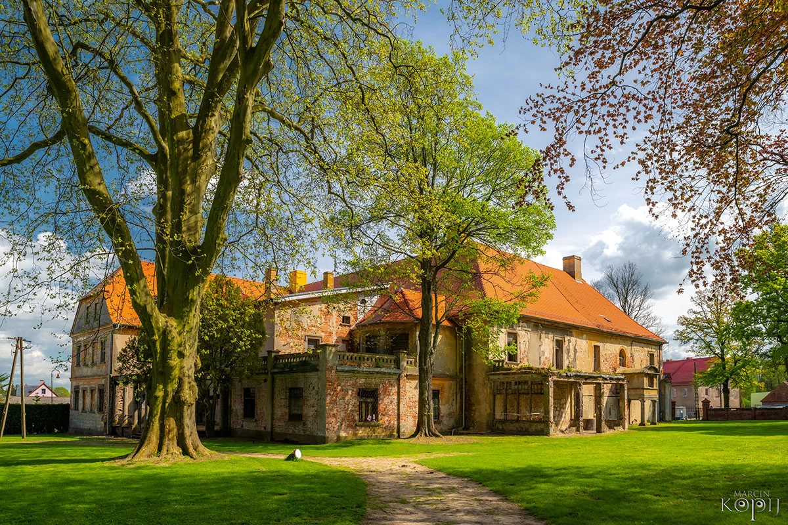
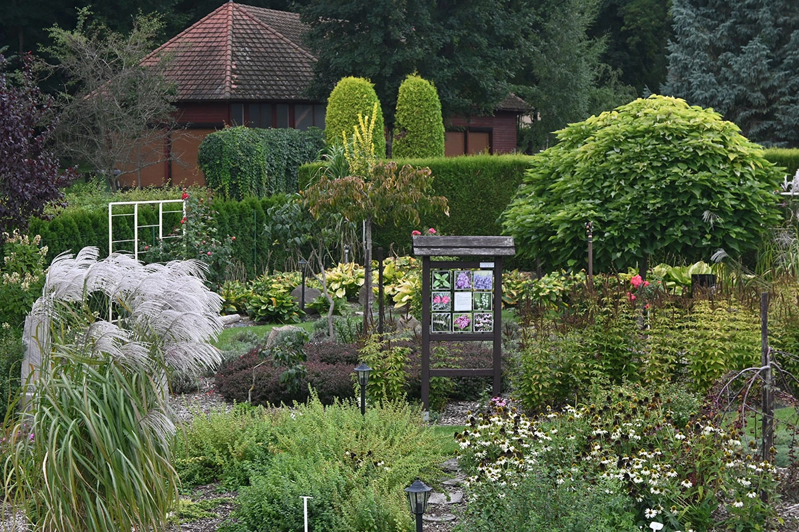
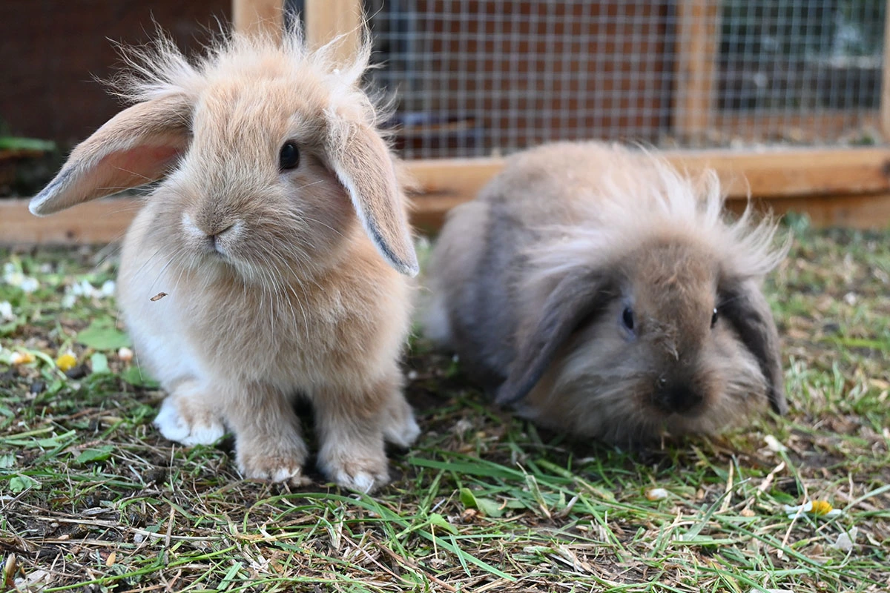
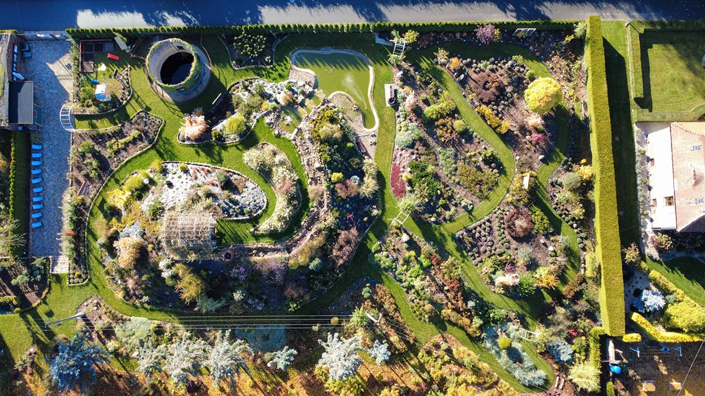
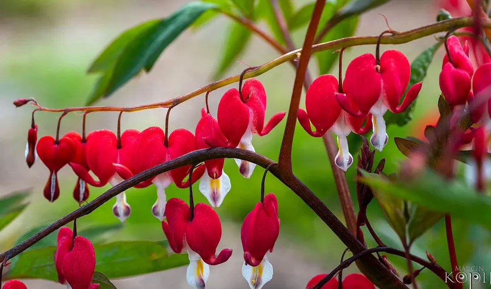
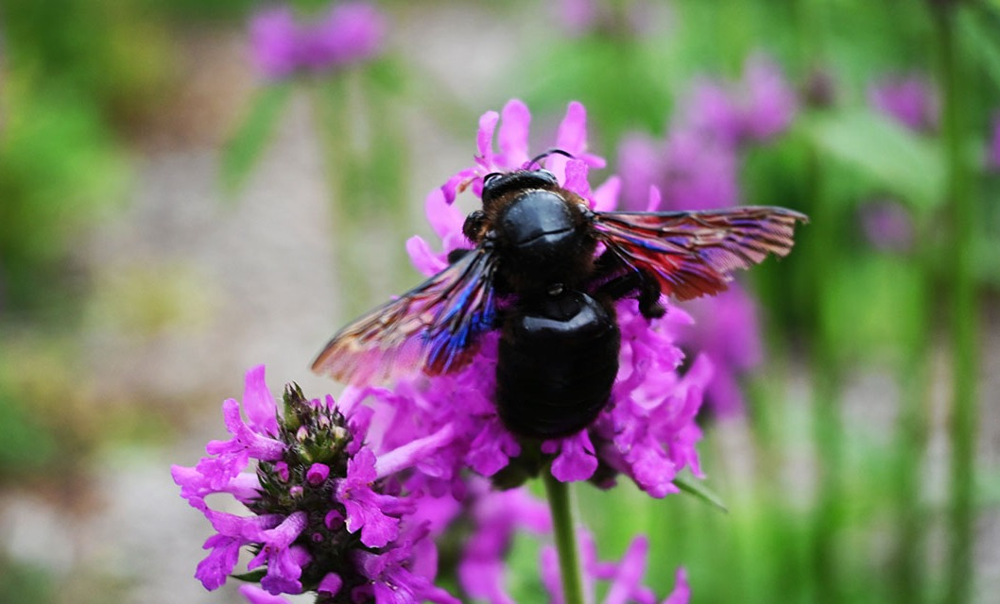

Fundacja prowadzi remont pałacu w Dalkowie, organizuje warsztaty z hortiterapii, spacery z przewodnikiem po Wzgórzach Dalkowskich oraz opiekuje się zabytkowym parkiem i kompleksem 7 Ogrodów "Centrum Hortiterapii-Ogrody Zmysłów na Wzgórzach Dalkowskich".
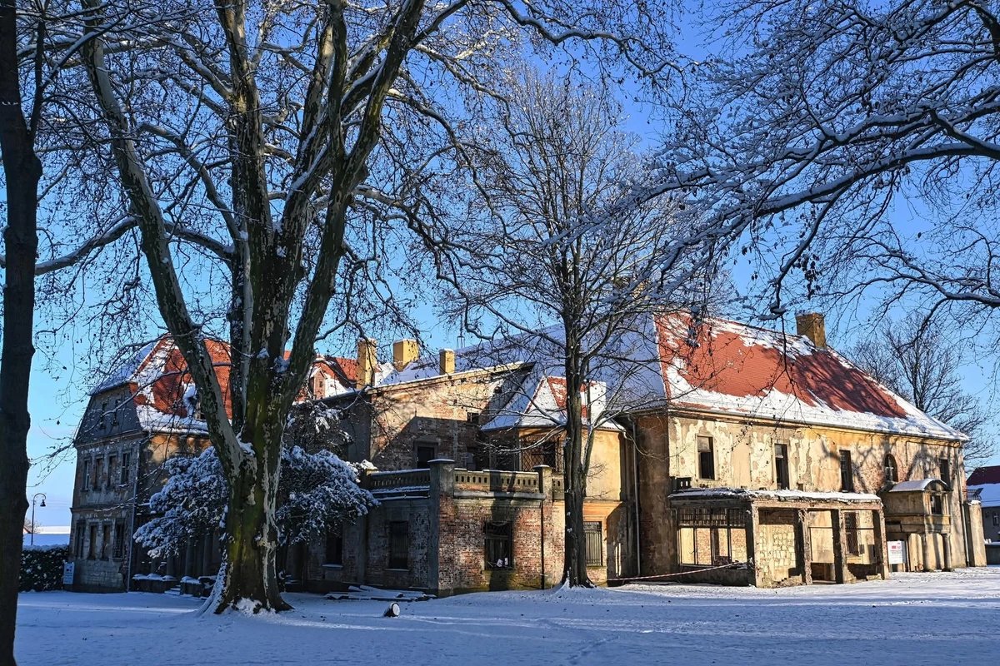
Fundacja na rzecz Rodziny i Rewitalizacji Polskiej Wsi działa w Dalkowie od 2017 r. Od początku swoich działań Fundacja zajmuje się rewitalizacją zabytkowego zespołu pałacowo-parkowego w Dalkowie oraz rozwojem turystyki na Wzgórzach Dalkowskich. Na co dzień organizowane są tu warsztaty z hortiterapii, edukacji ekologicznej i historycznej. W zajęciach takich wzięło udział już kilkanaście tysięcy dzieci, młodzieży, seniorów i osób z niepełnosprawnościami.
Więcej o naszej działalności dowiesz sie w zakładce o Fundacji







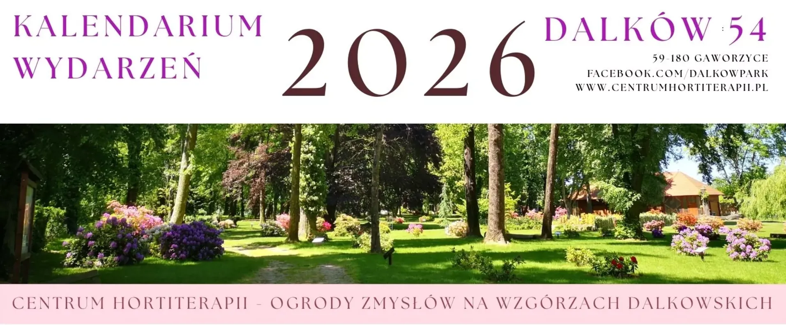
2026
Kalendarium zawiera informacje o terminach:
- Otwarcia Centrum Hortiterapii - Ogrodów Zmysłów na Wzgórzach Dalkowskich i Szkółki Drzew i Krzewów Józef Płocha
- Spacerów z przewodnikiem po Wzgórzach Dalkowskich
- Zwiedzania zabytkowego pałacu w Dalkowie
- Gry terenowej "Poszukiwanie skarbu Luise"
- Wydarzeń cyklicznych (IV Festiwal Kwitnących Azalii i Rododendronów, Targi żywności, rękodzieła i roślin)
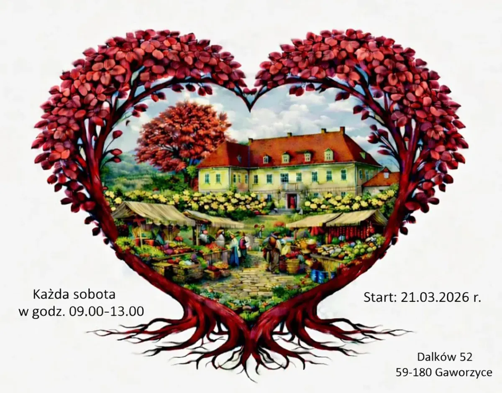
2026-03-21
Od 21.03,w każdą sobotę w godz. 9-13 Targ żywności, rękodzieła i roślin.
Lokalizacja: folwark przypałacowy
(Dalków 52, 59-180 Gaworzyce)
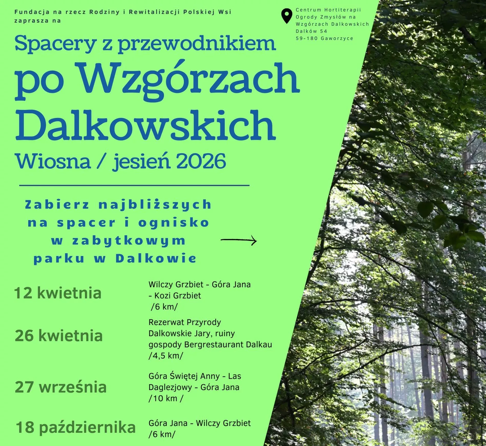
2026-04-12
12.04.2026 zapraszamy wszystkich na spacer z przewodnikiem po Wzgórzach Dalkowskich.
Lokalizacja: park przypałacowy i Ogrody Zmysłów
(Dalków 54, 59-180 Gaworzyce)

2026-05-17
Już 17 maja odbędzie się kolejna edycja Festiwalu w Dalkowie.
Lokalizacja: park przypałacowy i Ogrody Zmysłów
(Dalków 54, 59-180 Gaworzyce)
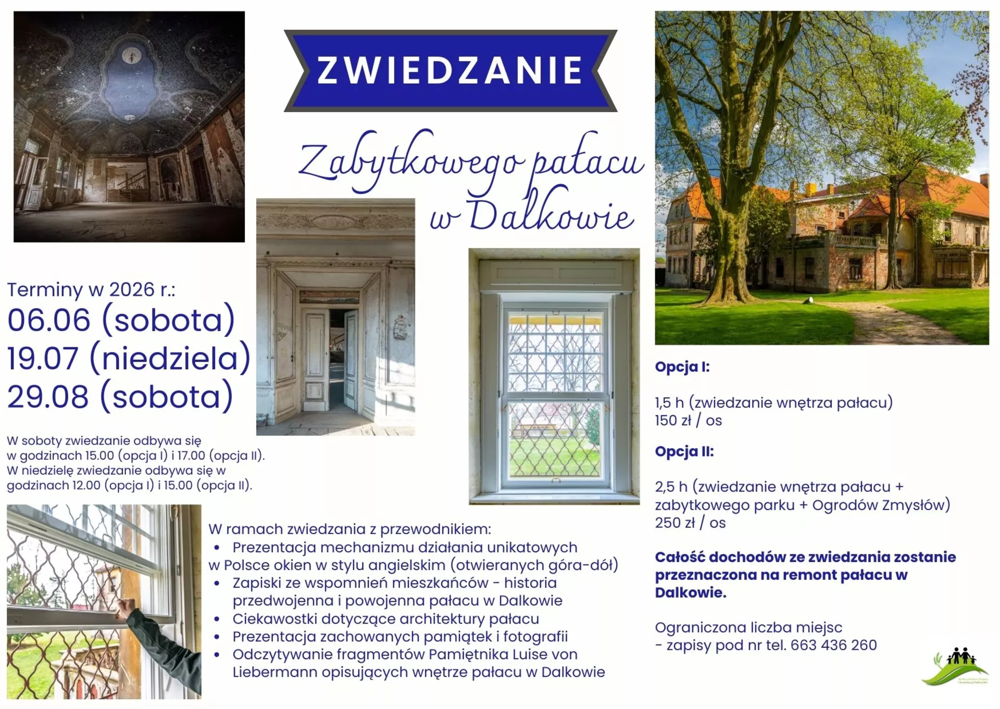
2026-06-06
Zapraszamy na zwiedzanie wnętrza pałacu w Dalkowie połączonego z prezentacją mechanizmu działania odrestaurowanych unikatowych w Polsce okien w stylu angielskim (unoszonych góra-dół).
Lokalizacja: zabytkowy pałac w Dalkowie
(Dalków 52, 59-180 Gaworzyce)
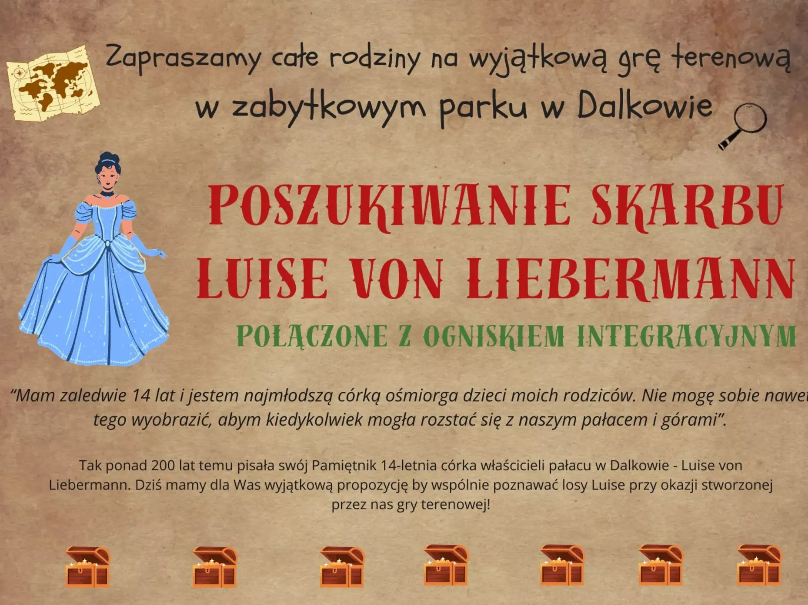
2026-06-21
21.06.2026 Dalkowie zapraszamy całe rodziny na wyjątkową grę terenową opartą na pamiętniku pisanym ponad 200 lat temu przez córkę właścicieli pałacu w Dalkowie.
Lokalizacja: zabytkowy park w Dalkowie
(Dalków 54, 59-180 Gaworzyce)

No Code Website Builder